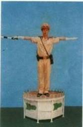
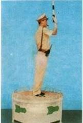

📘 125 CÂU HỎI LÝ THUYẾT GPLX (A, A1)
✅ Đáp án đúng in màu đỏ — ôn tập nhanh, đỗ ngay lần đầu
Câu hỏi 1:
Phần của đường bộ được sử dụng cho phương tiện giao thông đường bộ đi lại là gì?
1. Phần mặt đường và lề đường.
2. Phần đường xe chạy.
3. Phần đường xe cơ giới.
Câu hỏi 2:
Làn đường là gì?
1. Là một phần của phần đường xe chạy được chia theo chiều dọc, sử dụng cho xe chạy.
2. Là một phần của phần đường xe chạy được chia theo chiều dọc, có đủ chiều rộng cho xe chạy an toàn.
3. Là đường cho ô tô dừng, đỗ an toàn.
Câu hỏi 3:
Khổ giới hạn của đường bộ được hiểu như thế nào là đúng?
1. Là khoảng trống có kích thước giới hạn về chiều rộng, chiều cao của đường bộ để các xe kể cả hàng hóa đi qua an toàn, xác định theo quy chuẩn kỹ thuật.
2. Là khoảng trống giới hạn về chiều rộng của đường, cầu, bến phà, hầm.
3. Là khoảng trống giới hạn về chiều cao của cầu, bến phà, hầm.
Câu hỏi 4:
Dải phân cách được lắp đặt để làm gì?
1. Để phân chia làn xe cơ giới và xe thô sơ trên đường cao tốc.
2. Để phân chia phần đường xe chạy thành hai chiều riêng biệt hoặc phân chia phần đường cho xe cơ giới và xe thô sơ (hoặc nhiều loại xe khác nhau) trên cùng một chiều đường.
3. Để phân tách phần đường xe chạy và hành lang an toàn.
Câu hỏi 5:
Vạch kẻ đường là gì?
1. Là báo hiệu cảnh báo nguy hiểm.
2. Là vạch chỉ sự phân chia làn đường, vị trí hoặc hướng đi, vị trí dừng lại.
3. Là báo hiệu thông tin đường bộ.
4. Cả ba ý trên.
Câu hỏi 6:
Người điều khiển phương tiện tham gia giao thông đường bộ được hiểu như thế nào là đúng?
1. Là người điều khiển xe cơ giới, xe thô sơ, xe máy chuyên dùng.
2. Là người được giao nhiệm vụ hướng dẫn giao thông.
3. Cả hai ý trên.
Câu hỏi 7:
Người lái xe được hiểu như thế nào là đúng?
1. Là người điều khiển xe cơ giới.
2. Là người điều khiển xe thô sơ.
3. Là người điều khiển xe máy chuyên dùng.
Câu hỏi 8:
Trong nhóm phương tiện dưới đây, nhóm nào là xe cơ giới?
1. Xe ô tô, máy kéo, mô tô, xe gắn máy, xe đạp, xe đạp điện.
2. Xe ô tô, rơ moóc được kéo bởi ô tô, sơ mi rơ moóc, xe chở người 4 bánh có gắn động cơ, xe chở hàng 4 bánh, xe mô tô, xe gắn máy và các loại tương tự.
3. Xe ô tô, máy kéo, rơ moóc, sơ mi rơ moóc.
Câu hỏi 9:
Nhóm phương tiện nào là xe thô sơ?
1. Xe đạp, xe đạp máy, xe đạp điện, xe xích lô, xe lăn của người khuyết tật, xe vật nuôi kéo và các loại tương tự.
2. Xe đạp, xe gắn máy, xe cơ giới dùng cho người khuyết tật.
3. Xe ô tô, máy kéo, rơ moóc.
Câu hỏi 10:
Phương tiện giao thông đường bộ gồm những loại nào?
1. Phương tiện cơ giới đường bộ.
2. Phương tiện thô sơ, xe máy chuyên dùng và các loại tương tự.
3. Cả hai ý trên.
Câu hỏi 11:
Người tham gia giao thông đường bộ gồm những ai?
1. Người điều khiển, người được chở.
2. Người điều khiển vật nuôi, người đi bộ.
3. Cả hai ý trên.
Câu hỏi 12:
Người điều khiển phương tiện tham gia giao thông gồm?
1. Người điều khiển xe cơ giới, xe thô sơ.
2. Người điều khiển xe máy chuyên dùng.
3. Cả hai ý trên.
Câu hỏi 13:
Người điều khiển giao thông đường bộ là ai?
1. Là người điều khiển phương tiện.
2. Là Cảnh sát giao thông và người được giao nhiệm vụ hướng dẫn giao thông.
3. Là người tham gia giao thông.
Câu hỏi 14 (*):
Hành vi nào bị nghiêm cấm?
1. Sử dụng xe đạp trên quốc lộ.
2. Rải vật sắc nhọn, đổ chất gây trơn trượt trên đường.
3. Cả hai ý trên.
Câu hỏi 15 (*):
Hành vi đưa xe cơ giới tham gia giao thông bị cấm khi nào?
1. Không có chứng nhận kiểm định an toàn kỹ thuật và bảo vệ môi trường.
2. Hết niên hạn sử dụng.
3. Cả hai ý trên.
Câu hỏi 16 (*):
Tổ chức đua xe được phép khi nào?
1. Trên đường vắng.
2. Được dân ủng hộ.
3. Được cơ quan có thẩm quyền cấp phép.
Câu hỏi 17 (*):
Hành vi đua xe trái phép bị xử lý thế nào?
1. Chỉ nhắc nhở.
2. Tùy mức độ có thể bị xử lý hành chính hoặc hình sự.
3. Không xử lý.
Câu hỏi 18 (*):
Người điều khiển phương tiện có nồng độ cồn trong máu hoặc hơi thở có bị nghiêm cấm không?
1. Bị nghiêm cấm.
2. Không bị cấm.
3. Không bị cấm nếu nồng độ nhẹ.
Câu hỏi 19 (*):
Theo Luật Phòng chống tác hại của rượu bia, đối tượng nào bị cấm sử dụng rượu bia khi tham gia giao thông?
1. Người điều khiển xe ô tô, mô tô, xe đạp, xe gắn máy.
2. Người được chở trên xe cơ giới.
3. Cả hai ý trên.
Câu hỏi 20 (*):
Hành vi giao xe ô tô, mô tô cho người nào tham gia giao thông bị cấm?
1. Người chưa đủ tuổi.
2. Người không có GPLX.
3. Người bị trừ hết 12 điểm GPLX.
4. Cả ba ý trên.
Câu hỏi 21 (*):
Hành vi nào sau đây bị nghiêm cấm?
1. Điều khiển xe lạng lách, đánh võng, rú ga liên tục.
2. Xúc phạm, cản trở, chống đối người thi hành công vụ.
3. Cả hai ý trên.
Câu hỏi 22:
Các hành vi nào sau đây bị cấm đối với phương tiện tham gia giao thông đường bộ?
1. Cải tạo xe ô tô loại khác thành xe ô tô chở người phục vụ quốc phòng, an ninh.
2. Cải tạo trái phép; cố ý can thiệp làm sai lệch đồng hồ báo quãng đường; cắt, hàn, tẩy xóa, đục sửa, đóng lại trái phép số khung, số máy.
Câu hỏi 23 (*):
Hành vi nào sau đây bị cấm?
1. Lắp đặt, sử dụng thiết bị âm thanh, ánh sáng gây mất trật tự an toàn giao thông.
2. Cản trở người, phương tiện; ném gạch, đất, đá vào người, phương tiện đang tham gia giao thông.
3. Cả hai ý trên.
Câu hỏi 24:
Việc sản xuất, sử dụng, mua, bán trái phép biển số xe có bị nghiêm cấm không?
1. Không bị nghiêm cấm.
2. Bị nghiêm cấm.
3. Bị nghiêm cấm tùy trường hợp.
Câu hỏi 25:
Khi điều khiển phương tiện, hành vi nào bị nghiêm cấm?
1. Thay đổi tốc độ nhiều lần.
2. Điều khiển sau 23h.
3. Lạng lách, đánh võng, rú ga liên tục.
Câu hỏi 26:
Có bao nhiêu nhóm biển báo hiệu đường bộ?
1. Ba nhóm.
2. Bốn nhóm.
3. Năm nhóm: cấm, nguy hiểm, hiệu lệnh, chỉ dẫn, phụ.
Câu hỏi 27:
Tại nơi có vạch kẻ đường hoặc người đi bộ, xe lăn của người khuyết tật đang qua đường, người điều khiển phương tiện phải làm gì?
1. Giảm tốc độ và nhường đường.
2. Quan sát, giảm tốc độ hoặc dừng lại để bảo đảm an toàn.
3. Tăng tốc nhanh chóng qua.
Câu hỏi 28:
Người điều khiển xe mô tô phải giảm tốc độ hoặc dừng lại để đảm bảo an toàn trong trường hợp nào?
1. Đường hẹp, đường vòng, đèo dốc.
2. Cầu, cống hẹp, hầm chui.
3. Trời mưa, sương mù, đường trơn trượt.
4. Cả ba ý trên.
Câu hỏi 29:
Khi gặp hiệu lệnh của CSGT như hình, người tham gia giao thông phải đi như thế nào?

1. Các hướng phải dừng lại.
2. Đi theo chiều gậy chỉ.
3. Phía trước và phía sau được đi; bên trái, phải dừng.
4. Phía trước và phía sau phải dừng; bên phải và bên trái được đi tất cả các hướng.
Câu hỏi 30:
Khi gặp hiệu lệnh CSGT như hình, người tham gia giao thông phải đi như thế nào?

1. Phía sau CSGT được đi, các hướng khác dừng.
2. Được rẽ phải theo mũi tên xanh.
3. Tất cả các hướng phải dừng lại, trừ xe đã ở trong khu vực giao nhau.
4. Phía trước CSGT phải dừng, các hướng khác được đi.
Câu hỏi 31:
Khi hiệu lệnh người điều khiển giao thông trái với đèn tín hiệu hoặc biển báo, người tham gia giao thông phải chấp hành theo?
1. Theo hiệu lệnh của người điều khiển giao thông.
2. Theo đèn tín hiệu.
3. Theo biển báo.
Câu hỏi 32:
Khi vừa có biển báo cố định vừa có biển tạm thời mà ý nghĩa khác nhau, phải chấp hành biển nào?
1. Biển cố định.
2. Biển tạm thời.
3. Tùy chọn.
Câu hỏi 33:
Tại nơi đường giao nhau, đèn vàng, người điều khiển phương tiện phải làm gì?
1. Dừng lại trước vạch dừng; nếu đã qua vạch thì đi tiếp; đèn vàng nhấp nháy: quan sát, giảm tốc độ, nhường đường cho người đi bộ.
2. Tăng tốc vượt nhanh.
3. Giảm tốc từ từ qua.
Câu hỏi 34:
Quy định về tốc độ tối đa, người lái xe phải?
1. Chỉ lớn hơn khi đường vắng.
2. Chỉ lớn hơn khi ban đêm.
3. Không vượt quá tốc độ tối đa cho phép.
Câu hỏi 35:
Phương tiện di chuyển với tốc độ thấp hơn phải đi như thế nào?
1. Đi về bên trái chiều đi của mình.
2. Đi về bên phải theo chiều đi của mình.
3. Đi bất cứ bên nào nhưng bật đèn cảnh báo.
Câu hỏi 36:
Trên đường có vạch kẻ phân làn, xe cơ giới phải đi trên làn nào?
1. Làn bên phải trong cùng.
2. Làn bên trái.
3. Làn nào cũng được miễn đúng tốc độ.
Câu hỏi 37:
Khi nào người lái xe phải giảm tốc, bật tín hiệu rẽ phải và đi sát về bên phải?
1. Khi xe phía trước có tín hiệu vượt.
2. Khi phía trước có xe ngược chiều.
3. Khi xe sau xin vượt nếu đủ điều kiện an toàn.
4. Khi xe sau xin vượt bên phải.
Câu hỏi 38:
Vượt xe là gì?
1. Tình huống đường chỉ một làn, xe sau sang bên trái lên trước.
2. Tình huống có từ hai làn cùng chiều, xe sau di chuyển lên trước theo quy tắc làn đường.
Câu hỏi 39 (*):
Có được vượt xe trên cầu hẹp một làn đường, đường cong tầm nhìn hạn chế?
1. Được khi đường vắng.
2. Không được phép vượt.
3. Được khi có việc gấp.
Câu hỏi 40 (*):
Muốn vượt xe phía trước, người lái xe mô tô phải có tín hiệu như thế nào?
1. Bấm còi liên tục.
2. Rú ga liên tục.
3. Báo hiệu nhấp nháy bằng đèn chiếu sáng phía trước hoặc còi.
Câu hỏi 41:
Trong khu đông dân cư, trừ khu vực có biển cấm còi, được sử dụng còi trong thời gian nào?
1. Từ 22h đến 5h sáng hôm sau.
2. Từ 5h đến 22h.
3. Từ 23h đến 5h.
Câu hỏi 42:
Khi đi trên đoạn đường qua khu đông dân cư có hệ thống chiếu sáng đang hoạt động, người lái xe sử dụng đèn như thế nào?
1. Chỉ bật đèn pha.
2. Bật đèn pha khi đường vắng, đèn cốt khi có xe ngược chiều.
3. Chỉ bật đèn chiếu gần (đèn cốt).
Câu hỏi 43 (*):
Hành vi nào bị cấm khi điều khiển phương tiện tham gia giao thông?
1. Dùng tay cầm và sử dụng điện thoại hoặc thiết bị điện tử khác.
2. Chỉ được chở người trên thùng xe ô tô tải trong trường hợp cứu nạn, khẩn cấp.
Câu hỏi 44 (*):
Người lái xe không được vượt khi gặp trường hợp nào?
1. Trên cầu hẹp có một làn đường; nơi đường giao nhau; đường bộ giao nhau cùng mức với đường sắt; khi gặp xe ưu tiên.
2. Trên cầu có từ 2 làn xe trở lên.
3. Trên đường có 2 làn phân cách bằng vạch nét đứt.
Câu hỏi 45:
Nơi nào cấm quay đầu xe?
1. Ở phần đường dành cho người đi bộ qua đường, trên cầu, đầu cầu, gầm cầu vượt, ngầm.
2. Tại nơi đường bộ giao nhau với đường sắt, đường hẹp, đường dốc, đường cong tầm nhìn bị che khuất, trên đường cao tốc, hầm đường bộ, đường một chiều.
3. Cả hai ý trên.
Câu hỏi 46:
Trước khi cho xe chuyển hướng, người lái xe phải làm gì để bảo đảm an toàn giao thông?
1. Phải quan sát, bảo đảm khoảng cách an toàn với xe phía sau.
2. Giảm tốc độ và có tín hiệu báo hướng rẽ.
3. Chuyển dần sang làn gần nhất với hướng rẽ. Khi bảo đảm an toàn, không gây trở ngại mới được chuyển hướng.
4. Cả ba ý trên.
Câu hỏi 47:
Khi chuyển làn đường, người lái xe phải bật đèn tín hiệu báo rẽ như thế nào là đúng quy tắc giao thông?
1. Khi bắt đầu chuyển làn đường.
2. Trước khi thay đổi làn đường.
3. Sau khi thay đổi làn đường.
Câu hỏi 48:
Người điều khiển phương tiện tham gia giao thông không được dừng xe, đỗ xe ở những vị trí nào sau đây?
1. Trên miệng cống thoát nước, miệng hầm của đường điện thoại, điện cao thế, chỗ dành riêng cho xe chữa cháy lấy nước.
2. Trong phạm vi an toàn của đường sắt.
3. Cả hai ý trên.
Câu hỏi 49 (*):
Người điều khiển xe mô tô hai bánh, xe mô tô ba bánh, xe gắn máy có được phép sử dụng xe để kéo hoặc đẩy các phương tiện khác khi tham gia giao thông không?
1. Được phép.
2. Nếu phương tiện được kéo, đẩy có khối lượng nhỏ hơn.
3. Tùy trường hợp.
4. Không được phép.
Câu hỏi 50 (*):
Khi điều khiển xe mô tô hai bánh, xe mô tô ba bánh, xe gắn máy, những hành vi nào sau đây không được phép?
1. Buông cả hai tay; đứng, nằm trên xe; sử dụng chân chống hoặc vật khác quệt xuống đường khi xe đang chạy.
2. Chở tối đa hai người phía sau khi chở người bệnh cấp cứu, áp giải người vi phạm, trẻ em dưới 12 tuổi, người già yếu hoặc khuyết tật.
Câu hỏi 51 (*):
Khi điều khiển xe mô tô hai bánh, xe mô tô ba bánh, xe gắn máy, những hành vi nào không được phép?
1. Buông cả hai tay; sử dụng xe để kéo, đẩy xe khác; sử dụng chân chống hoặc vật khác quệt xuống đường khi xe đang chạy.
2. Sử dụng xe để chở người hoặc hàng hóa; để chân chạm đất khi khởi hành.
3. Đội mũ bảo hiểm; chạy đúng tốc độ; chấp hành đúng quy tắc giao thông.
4. Chở người ngồi sau dưới 16 tuổi.
Câu hỏi 52:
Người được chở trên xe mô tô hai bánh, xe mô tô ba bánh, xe gắn máy khi tham gia giao thông không được thực hiện hành vi nào sau đây?
1. Mang, vác vật cồng kềnh.
2. Bám, kéo hoặc đẩy các phương tiện khác.
3. Dùng tay cầm điện thoại hoặc thiết bị điện tử khác.
4. Ý 1 và ý 2.
Câu hỏi 53:
Người được chở trên xe mô tô hai bánh, xe mô tô ba bánh, xe gắn máy có được bám, kéo hoặc đẩy các phương tiện khác không?
1. Được phép.
2. Được bám trong trường hợp phương tiện của mình bị hỏng.
3. Được kéo, đẩy nếu phương tiện khác bị hỏng.
4. Không được phép.
Câu hỏi 54 (*):
Người lái xe, người được chở trên xe mô tô hai bánh, xe mô tô ba bánh, xe gắn máy phải thực hiện quy định nào dưới đây?
1. Đội mũ bảo hiểm theo đúng quy chuẩn kỹ thuật quốc gia và cài quai đúng quy cách.
2. Chỉ người lái phải đội mũ bảo hiểm, người được chở không bắt buộc.
3. Phải đội mũ bảo hiểm nhưng không nhất thiết phải cài quai.
Câu hỏi 55:
Người lái xe mô tô hai bánh, xe gắn máy được phép chở tối đa hai người trong những trường hợp nào?
1. Chở người bệnh đi cấp cứu; áp giải người có hành vi vi phạm pháp luật; trẻ em dưới 12 tuổi; người già yếu hoặc người khuyết tật.
2. Người đã uống rượu, bia; người có chất ma túy.
3. Cả hai ý trên.
Câu hỏi 56 (*):
Người lái xe mô tô hai bánh, xe mô tô ba bánh, xe gắn máy không được thực hiện các hành vi nào dưới đây?
1. Đi xe dàn hàng ngang; buông cả hai tay.
2. Sử dụng xe để kéo, đẩy xe khác, dẫn dắt vật nuôi, mang vác vật cồng kềnh; chở người đứng trên xe; xếp hàng quá giới hạn.
3. Ngồi lệch sang một bên; đứng, nằm trên xe; thay người lái khi xe đang chạy; quay người về phía sau; bịt mắt khi lái; dùng chân chống quệt xuống đường.
4. Cả ba ý trên.
Câu hỏi 57 (*):
Người lái xe mô tô hai bánh, xe mô tô ba bánh, xe gắn máy không được thực hiện các hành vi nào sau đây?
1. Đi xe dàn hàng ngang; đi vào phần đường dành cho người đi bộ.
2. Sử dụng ô, thiết bị âm thanh, trừ thiết bị trợ thính.
3. Cả hai ý trên.
Câu hỏi 58 (*):
Người lái xe mô tô hai bánh, xe mô tô ba bánh, xe gắn máy không được thực hiện hành vi nào sau đây?
1. Đi trên phần đường, làn đường quy định, chấp hành hiệu lệnh của người điều khiển giao thông, đèn tín hiệu.
2. Đi xe dàn hàng ngang, đi vào phần đường dành cho người đi bộ.
3. Cả hai ý trên.
Câu hỏi 59:
Người được chở trên xe mô tô hai bánh, xe mô tô ba bánh, xe gắn máy có được sử dụng ô khi trời mưa hay không?
1. Được sử dụng.
2. Chỉ người ngồi sau được sử dụng.
3. Không được sử dụng.
4. Được sử dụng nếu không có áo mưa.
Câu hỏi 60:
Người được chở trên xe mô tô có được kéo theo người đang điều khiển xe đạp hay không?
1. Chỉ được nếu cả hai đội mũ bảo hiểm.
2. Không được phép.
3. Chỉ được thực hiện trên đường vắng.
Câu hỏi 61:
Trường hợp người được chở trên xe mô tô, xe gắn máy không đội mũ bảo hiểm hoặc không cài quai đúng quy cách (trừ trường hợp chở người bệnh cấp cứu, trẻ dưới 6 tuổi, áp giải người vi phạm) thì việc xử phạt được quy định như thế nào?
1. Không bị xử phạt, chỉ bị nhắc nhở.
2. Chỉ xử phạt người điều khiển, người được chở không bị phạt.
3. Chỉ xử phạt người được chở, không xử phạt người điều khiển.
4. Xử phạt cả người điều khiển và người được chở.
Câu hỏi 62:
Trong các trường hợp dưới đây, để bảo đảm an toàn khi tham gia giao thông, người lái xe mô tô cần thực hiện như thế nào?
1. Phải đội mũ bảo hiểm đúng quy chuẩn và cài quai đúng quy cách, không sử dụng ô, điện thoại di động, thiết bị âm thanh (trừ thiết bị trợ thính).
2. Phải đội mũ bảo hiểm khi trời mưa hoặc quá nắng; có thể sử dụng ô, điện thoại nhưng phải đảm bảo an toàn.
3. Phải đội mũ bảo hiểm khi cảm thấy mất an toàn hoặc khi đi xa.
Câu hỏi 63:
Thứ tự xuống phà như thế nào là đúng quy tắc giao thông?
1. Xe thô sơ, người đi bộ xuống trước, xe cơ giới, xe máy chuyên dùng xuống sau.
2. Xe cơ giới, xe máy chuyên dùng xuống trước, xe thô sơ, người đi bộ xuống sau.
3. Xe cơ giới, xe thô sơ xuống trước, xe máy chuyên dùng, người đi bộ xuống sau.
Câu hỏi 64:
Khi lái xe trong đô thị và khu đông dân cư từ 22h đến 5h sáng hôm sau, nếu cần vượt một xe khác, người lái xe phải báo hiệu như thế nào?
1. Chỉ được báo hiệu bằng còi.
2. Phải báo hiệu bằng cả còi và đèn.
3. Chỉ được báo hiệu bằng đèn.
Câu hỏi 65:
Khi điều khiển xe chạy trên đường, biết có xe sau xin vượt, nếu đủ điều kiện an toàn người điều khiển phương tiện phải làm gì?
1. Tăng tốc độ và ra hiệu cho xe sau vượt.
2. Giảm tốc độ, có tín hiệu rẽ phải, đi sát về bên phải phần đường xe chạy cho đến khi xe sau vượt qua, không cản trở xe xin vượt.
3. Đi sát về bên trái và ra hiệu cho xe sau vượt.
Câu hỏi 66:
Trên đường không phân chia thành hai chiều xe chạy riêng biệt, người điều khiển phương tiện phải tránh xe đi ngược chiều như thế nào?
1. Giảm tốc độ và cho xe đi về bên phải theo chiều xe chạy của mình.
2. Một trong hai xe phải dừng lại cho xe kia đi qua.
3. Tăng tốc, cho xe đi về bên phải để nhanh chóng vượt qua.
Câu hỏi 67:
Khi tránh xe đi ngược chiều, các xe phải nhường đường như thế nào là đúng quy tắc giao thông?
1. Nơi đường hẹp chỉ đủ một xe, xe nào ở gần chỗ tránh hơn phải vào vị trí tránh, nhường đường cho xe đi ngược chiều.
2. Xe xuống dốc phải nhường đường cho xe lên dốc.
3. Xe có chướng ngại vật phía trước phải nhường đường cho xe không có chướng ngại vật.
4. Cả ba ý trên.
Câu hỏi 68:
Người lái xe phải làm gì để bảo đảm an toàn khi lái xe trên đường cong có tầm nhìn bị hạn chế?
1. Quan sát, giảm tốc độ hoặc dừng lại để bảo đảm an toàn.
2. Đi sang làn ngược chiều để mở rộng tầm nhìn.
3. Đi sát bên phải, bật tín hiệu vượt bên phải.
Câu hỏi 69:
Tại nơi đường giao nhau, người lái xe đang đi trên đường không ưu tiên, đường nhánh phải nhường đường như thế nào?
1. Nhường đường cho xe đi bên phải mình tới.
2. Nhường đường cho xe đi bên trái mình tới.
3. Nhường đường cho xe đi trên đường ưu tiên hoặc đường chính từ bất kỳ hướng nào tới.
Câu hỏi 70:
Tại nơi đường giao nhau có báo hiệu đi theo vòng xuyến, người lái xe phải nhường đường như thế nào?
1. Nhường đường cho xe đi đến từ bên phải.
2. Nhường đường cho xe đi đến từ bên trái.
3. Không phải nhường đường.
Câu hỏi 71:
Tại nơi đường giao nhau không có báo hiệu đi theo vòng xuyến, người điều khiển phương tiện phải nhường đường như thế nào?
1. Phải nhường đường cho xe đi đến từ bên phải.
2. Xe báo hiệu xin đường trước được đi trước.
3. Phải nhường đường cho xe đi đến từ bên trái.
Câu hỏi 72:
Người lái xe phải nhanh chóng giảm tốc độ, đi sát lề đường bên phải hoặc dừng lại để nhường đường cho các loại xe nào dưới đây?
1. Xe chữa cháy, xe cứu thương, xe quân sự, công an, kiểm sát đi làm nhiệm vụ khẩn cấp, đoàn xe có CSGT dẫn đường, xe hộ đê, xe cứu nạn, cứu hộ, đoàn xe tang.
2. Xe ưu tiên gồm xe chữa cháy, xe quân sự, công an, kiểm sát, đoàn xe có CSGT dẫn đường, xe cứu thương, xe hộ đê, xe cứu nạn, cứu hộ, khắc phục thiên tai, dịch bệnh, xe đi làm nhiệm vụ khẩn cấp.
3. Xe ô tô, xe máy, đoàn xe diễu hành có tổ chức.
Câu hỏi 73:
Khi có tín hiệu của xe ưu tiên, người và phương tiện tham gia giao thông đường bộ phải tuân thủ quy định nào dưới đây?
1. Giảm tốc độ, đi sát lề đường bên phải hoặc dừng lại để nhường đường.
2. Tăng tốc độ và đi sát lề bên phải để nhường đường.
3. Giảm tốc độ, đi sát lề bên trái để nhường đường.
Câu hỏi 74:
Khi đang lái xe, phía trước có một xe Cảnh sát giao thông không phát tín hiệu ưu tiên, người lái xe có được phép vượt hay không?
1. Không được vượt.
2. Được vượt ở phần đường dành cho người đi bộ.
3. Được vượt khi bảo đảm an toàn.
Câu hỏi 75:
Khi đang lái xe, phía trước có một xe cứu thương đang phát tín hiệu ưu tiên, người lái xe có được phép vượt hay không?
1. Không được vượt.
2. Được vượt khi đang đi trên cầu.
3. Được vượt khi qua nơi giao nhau ít phương tiện.
4. Được vượt khi bảo đảm an toàn.
Câu hỏi 76:
Khi tới đường ngang không có người gác, chắn, chuông, đèn tín hiệu, người tham gia giao thông phải làm gì để bảo đảm an toàn?
1. Dừng lại về bên phải đường của mình, trước vạch dừng xe và quan sát hai phía, khi không có phương tiện đường sắt tới mới được đi qua.
2. Quan sát hai phía, nếu không có tàu thì nhanh chóng qua.
3. Dừng cách ray 3m, nếu không có tàu thì nhanh chóng qua.
Câu hỏi 77:
Tại đường ngang, cầu chung đường sắt, khi có hiệu lệnh của nhân viên gác chắn, đèn đỏ nhấp nháy, chuông kêu, chắn đang dịch chuyển hoặc đã đóng, người tham gia giao thông phải làm gì?
1. Dừng lại về bên trái đường của mình, trước vạch dừng xe.
2. Dừng lại giữa đường, trước vạch dừng.
3. Dừng lại về bên phải đường của mình, trước vạch dừng xe.
Câu hỏi 78:
Người tham gia giao thông đường bộ phải dừng lại về bên phải đường của mình trước vạch dừng xe tại đường ngang, cầu chung đường sắt khi có báo hiệu nào dưới đây?
1. Hiệu lệnh của nhân viên gác chắn.
2. Đèn đỏ nhấp nháy, chuông kêu.
3. Chắn đường đang dịch chuyển hoặc đã đóng.
4. Cả ba ý trên.
Câu hỏi 79:
Người điều khiển phương tiện tham gia giao thông trong hầm đường bộ ngoài việc tuân thủ quy tắc giao thông còn phải thực hiện những quy định nào dưới đây?
1. Xe cơ giới, xe máy chuyên dùng phải bật đèn chiếu gần; xe thô sơ phải bật đèn hoặc có vật phát sáng; không dừng đỗ trong hầm (trừ sự cố kỹ thuật phải đưa vào vị trí khẩn cấp, có báo hiệu).
2. Xe cơ giới bật đèn pha; được dừng đỗ khi cần.
3. Chạy trên một làn và chỉ chuyển làn ở nơi được phép; được quay đầu, lùi xe khi cần.
Câu hỏi 80:
Người điều khiển phương tiện tham gia giao thông đường bộ phải quan sát, giảm tốc độ hoặc dừng lại để bảo đảm an toàn trong các trường hợp nào dưới đây?
1. Có báo hiệu cảnh báo nguy hiểm hoặc có chướng ngại vật; chuyển hướng; tầm nhìn bị hạn chế.
2. Nơi cầu, cống hẹp, đập tràn, đường ngầm, hầm chui, hầm đường bộ; có vật nuôi đi trên đường hoặc chăn thả ven đường.
3. Điểm dừng xe, đỗ xe có khách lên xuống.
4. Cả ba ý trên.
Câu hỏi 81:
Người lái xe được phép vượt xe khác về bên phải trong trường hợp nào dưới đây?
1. Xe phía trước có tín hiệu rẽ trái hoặc đang rẽ trái hoặc khi xe chuyên dùng đang làm việc trên đường mà không thể vượt bên trái.
2. Xe phía trước đang đi sát lề đường bên trái.
3. Cả hai ý trên.
Câu hỏi 82:
Khi có xe xin vượt, người lái xe mô tô xử lý như thế nào nếu đủ điều kiện an toàn cho xe phía sau vượt?
1. Giảm tốc độ, có tín hiệu rẽ phải để báo hiệu cho xe phía sau biết được vượt và đi sát về bên phải của phần đường xe chạy cho đến khi xe sau đã vượt qua, không cản trở xe xin vượt.
2. Lái xe vào lề đường bên trái và giảm tốc độ để xe sau vượt.
3. Tăng tốc độ, đi sát về bên phải cho đến khi xe sau vượt qua.
Câu hỏi 83:
Những trường hợp nào dưới đây không được đi trên đường cao tốc, trừ người, phương tiện phục vụ quản lý, bảo trì?
1. Xe máy chuyên dùng có tốc độ thiết kế nhỏ hơn tốc độ tối thiểu quy định; xe chở người 4 bánh có gắn động cơ, xe chở hàng 4 bánh có gắn động cơ, xe mô tô, xe gắn máy, các loại xe tương tự, xe thô sơ, người đi bộ.
2. Xe máy chuyên dùng có tốc độ thiết kế lớn hơn tốc độ tối thiểu.
3. Xe ô tô và xe máy chuyên dùng có tốc độ thiết kế lớn hơn 80 km/h.
Câu hỏi 84:
Theo quy định về độ tuổi, người đủ bao nhiêu tuổi trở lên thì được cấp giấy phép lái xe mô tô hai bánh có dung tích xi lanh đến 125 cm3 và xe ô tô chở người đến 8 chỗ (không kể chỗ lái xe); xe ô tô tải và ô tô chuyên dùng có khối lượng toàn bộ theo thiết kế đến 3.500 kg?
1. 16 tuổi.
2. 17 tuổi.
3. 18 tuổi.
Câu hỏi 85:
Người đủ 16 tuổi đến dưới 18 tuổi chỉ được điều khiển các loại xe nào dưới đây?
1. Xe mô tô hai bánh có dung tích xi-lanh đến 125 cm3.
2. Xe gắn máy.
3. Xe ô tô chở người đến 8 chỗ; ô tô tải đến 3.500 kg; hạng B kéo rơ moóc đến 750 kg.
4. Cả ba ý trên.
Câu hỏi 86:
Người có Giấy phép lái xe mô tô hạng A1 không được phép điều khiển loại xe nào dưới đây?
1. Xe mô tô hai bánh có dung tích xi-lanh 125 cm3 hoặc công suất động cơ điện đến 11 kW.
2. Xe mô tô ba bánh.
3. Cả hai ý trên.
Câu hỏi 87:
Người có Giấy phép lái xe mô tô hạng A1 được cấp sau ngày 01/01/2025 được phép điều khiển loại xe nào dưới đây?
1. Xe mô tô hai bánh có dung tích xi-lanh đến 125 cm3 hoặc có công suất động cơ điện đến 11 kW.
2. Xe mô tô ba bánh.
3. Cả hai ý trên.
Câu hỏi 88:
Người có Giấy phép lái xe mô tô hạng A được phép điều khiển loại xe nào dưới đây?
1. Xe mô tô hai bánh có dung tích xi-lanh đến 125 cm3 hoặc công suất đến 11 kW.
2. Xe mô tô hai bánh có dung tích xi-lanh trên 125 cm3 hoặc công suất trên 11 kW.
3. Cả hai ý trên.
Câu hỏi 89:
Người lái xe khi tham gia giao thông đường bộ phải đảm bảo các điều kiện nào dưới đây?
1. Phải đủ tuổi, sức khỏe theo quy định; có giấy phép lái xe còn điểm, còn hiệu lực phù hợp với loại xe (trừ xe gắn máy).
2. Phải là người đứng tên trong đăng ký xe.
3. Cả hai ý trên.
Câu hỏi 90:
Khi tham gia giao thông đường bộ, người lái xe phải mang theo các giấy tờ gì?
1. Chứng nhận đăng ký xe hoặc bản sao có chứng thực kèm giấy tờ gốc xác nhận của tổ chức tín dụng (nếu xe thế chấp).
2. Giấy phép lái xe phù hợp; chứng nhận kiểm định an toàn kỹ thuật và bảo vệ môi trường; chứng nhận bảo hiểm bắt buộc trách nhiệm dân sự.
3. Trường hợp đã tích hợp vào tài khoản định danh điện tử thì có thể xuất trình qua tài khoản.
4. Cả ba ý trên.
Câu hỏi 91:
Người có giấy phép lái xe chưa bị trừ hết 12 điểm, được phục hồi điểm giấy phép lái xe trong trường hợp nào sau đây?
1. Không được phục hồi.
2. Được phục hồi đủ 12 điểm, nếu không bị trừ điểm trong thời hạn 12 tháng từ ngày bị trừ điểm gần nhất.
Câu hỏi 92:
Người có giấy phép lái xe đã bị trừ hết điểm phải làm gì để phục hồi điểm?
1. Không vi phạm trong 12 tháng kể từ ngày bị trừ hết điểm.
2. Sau thời hạn ít nhất 6 tháng kể từ ngày bị trừ hết điểm, được tham gia kiểm tra nội dung kiến thức pháp luật về trật tự, an toàn giao thông đường bộ, đạt yêu cầu thì được phục hồi đủ 12 điểm.
3. Cả hai ý trên.
Câu hỏi 93:
Trách nhiệm của tổ chức, cá nhân đứng tên trong giấy chứng nhận đăng ký xe khi chưa thực hiện thu hồi chứng nhận đăng ký xe, biển số xe được quy định như thế nào?
1. Tiếp tục chịu trách nhiệm của chủ xe.
2. Không chịu trách nhiệm sau khi đã chuyển nhượng, tặng, cho.
Câu hỏi 94:
Trên đường bộ trong khu vực đông dân cư, đường đôi hoặc đường một chiều có từ hai làn xe cơ giới trở lên, xe mô tô hai bánh, ô tô chở người đến 28 chỗ (không kể lái xe) tham gia giao thông với tốc độ khai thác tối đa cho phép là bao nhiêu?
1. 60 km/h.
2. 50 km/h.
3. 40 km/h.
Câu hỏi 95:
Trên đường bộ (trừ đường cao tốc) trong khu vực đông dân cư, đường hai chiều hoặc đường một chiều có một làn xe cơ giới, xe mô tô hai bánh, ô tô chở người đến 28 chỗ tham gia giao thông với tốc độ tối đa cho phép là bao nhiêu?
1. 60 km/h.
2. 50 km/h.
3. 40 km/h.
Câu hỏi 96:
Trên đường bộ ngoài khu vực đông dân cư, đường đôi hoặc đường một chiều có từ hai làn xe cơ giới trở lên (trừ đường cao tốc), loại xe nào dưới đây được tham gia giao thông với tốc độ khai thác tối đa cho phép là 70 km/h?
1. Xe ô tô chở người đến 28 chỗ (trừ xe buýt); ô tô tải có trọng tải không lớn hơn 3,5 tấn.
2. Xe ô tô chở người trên 28 chỗ; ô tô tải trên 3,5 tấn (trừ ô tô xi téc).
3. Xe buýt; ô tô đầu kéo kéo sơ mi rơ moóc (trừ xi téc); xe mô tô; ô tô chuyên dùng (trừ ô tô trộn vữa, trộn bê tông lưu động).
4. Ô tô kéo rơ moóc; ô tô xi téc; ô tô đầu kéo kéo sơ mi rơ moóc xi téc.
Câu hỏi 97:
Trên đường bộ ngoài khu vực đông dân cư, đường hai chiều hoặc đường một chiều có một làn xe cơ giới (trừ đường cao tốc), loại xe nào được tham gia giao thông với tốc độ tối đa cho phép là 60 km/h?
1. Xe ô tô chở người đến 28 chỗ (trừ xe buýt); ô tô tải không lớn hơn 3,5 tấn.
2. Xe ô tô chở người trên 28 chỗ; ô tô tải trên 3,5 tấn (trừ xi téc).
3. Xe buýt; ô tô đầu kéo kéo sơ mi rơ moóc (trừ xi téc); xe mô tô; ô tô chuyên dùng (trừ ô tô trộn vữa, trộn bê tông lưu động).
4. Ô tô kéo rơ moóc; ô tô xi téc; ô tô đầu kéo kéo sơ mi rơ moóc xi téc.
Câu hỏi 98:
Người lái xe phải giảm tốc độ thấp hơn tốc độ tối đa cho phép đến mức cần thiết, chú ý quan sát và chuẩn bị sẵn sàng những tình huống có thể xảy ra để phòng ngừa tai nạn trong các trường hợp nào dưới đây?
1. Gặp biển báo nguy hiểm và cảnh báo trên đường.
2. Gặp biển chỉ dẫn trên đường.
3. Gặp biển báo hết mọi lệnh cấm.
4. Gặp biển báo hết hạn chế tốc độ tối đa cho phép.
Câu hỏi 99:
Khi gặp xe buýt đang dừng đón, trả khách, người điều khiển xe mô tô phải xử lý như thế nào dưới đây?
1. Tăng tốc độ để nhanh chóng vượt qua xe buýt.
2. Quan sát, giảm tốc độ đi qua xe buýt hoặc dừng lại để bảo đảm an toàn.
Câu hỏi 100:
Việc sử dụng xe mô tô, xe gắn máy, xe thô sơ để vận chuyển hành khách, hàng hóa phải thực hiện các quy định nào dưới đây để đảm bảo an toàn giao thông?
1. Kiểm tra điều kiện bảo đảm an toàn của xe trước khi tham gia giao thông; mang đủ giấy tờ theo quy định.
2. Kiểm tra sắp xếp hàng hóa bảo đảm an toàn; không chở quá số người, quá khối lượng hoặc quá khổ giới hạn.
3. Cả hai ý trên.
Câu hỏi 101:
Những hành vi nào sau đây thể hiện là người có văn hóa giao thông?
1. Luôn tuân thủ pháp luật về trật tự, an toàn giao thông đường bộ, nhường nhịn và giúp đỡ người khác.
2. Đi nhanh, vượt đèn đỏ nếu không có Công an.
3. Bấm còi và nháy đèn liên tục để cảnh báo xe khác.
4. Tránh nhường đường để đi nhanh hơn.
Câu hỏi 102:
Khái niệm về văn hóa giao thông được hiểu như thế nào là đúng?
1. Là sự hiểu biết và chấp hành nghiêm chỉnh pháp luật về giao thông, ý thức trách nhiệm với cộng đồng khi tham gia giao thông.
2. Là sự tôn trọng, nhường nhịn, giúp đỡ và ứng xử có văn hóa giữa những người tham gia giao thông.
3. Cả hai ý trên.
Câu hỏi 103:
Người lái xe không điều khiển xe đi đúng làn đường quy định, phóng nhanh, vượt ẩu, vượt đèn đỏ, đi vào đường cấm được coi là hành vi nào trong các hành vi dưới đây?
1. Là thiếu văn hóa giao thông, vi phạm pháp luật về trật tự, an toàn giao thông đường bộ.
2. Là thiếu văn hóa giao thông.
Câu hỏi 104:
Người lái xe có văn hóa giao thông khi tham gia giao thông đường bộ phải đáp ứng các điều kiện nào dưới đây?
1. Hiểu biết và chấp hành nghiêm pháp luật giao thông; có ý thức trách nhiệm với cộng đồng; tôn trọng, nhường nhịn, giúp đỡ và ứng xử có văn hóa.
2. Điều khiển xe vượt quá tốc độ, đi không đúng làn đường.
Câu hỏi 105:
Người lái xe mô tô có văn hóa giao thông khi tham gia giao thông phải tuân thủ những quy định nào dưới đây?
1. Điều khiển xe đi bên phải theo chiều đi của mình; đi đúng phần đường, làn đường quy định; đội mũ bảo hiểm đúng quy chuẩn, cài quai đúng quy cách.
2. Đi trên phần đường, làn đường có ít phương tiện tham gia giao thông.
3. Điều khiển xe và đội mũ bảo hiểm ở nơi có biển bắt buộc đội mũ.
Câu hỏi 106:
Trong các hành vi dưới đây, người lái xe có văn hóa giao thông phải ứng xử như thế nào?
1. Điều khiển xe đi bên phải theo chiều đi của mình; đi đúng phần đường, làn đường quy định; dừng, đỗ đúng nơi quy định; đã uống rượu, bia thì không lái xe.
2. Điều khiển xe trên phần đường, làn đường có ít phương tiện; dừng đỗ ở nơi thuận tiện hoặc theo yêu cầu.
3. Dừng đỗ ở nơi thuận tiện cho chuyên chở, sử dụng ít rượu bia thì có thể lái xe.
Câu hỏi 107:
Khi tham gia giao thông, việc sử dụng còi xe nên dùng như thế nào để thể hiện là người có văn hóa giao thông?
1. Chỉ bấm còi khi thật sự cần thiết, không bấm còi liên tục hoặc kéo dài, sử dụng còi với mức âm lượng theo quy định.
2. Bấm còi liên tục để các xe khác nhường đường.
3. Bấm còi to khi đi qua khu đông dân cư.
4. Không cần dùng còi, tránh gây tiếng ồn là văn minh.
Câu hỏi 108:
Người điều khiển phương tiện tham gia giao thông đường bộ gây ra tai nạn giao thông đường bộ, người liên quan đến vụ tai nạn có trách nhiệm gì dưới đây?
1. Dừng ngay phương tiện, cảnh báo nguy hiểm, giữ nguyên hiện trường, trợ giúp người bị nạn và báo tin cho Công an, cơ sở y tế.
2. Ở lại hiện trường cho đến khi Công an đến, trừ trường hợp phải đi cấp cứu hoặc bị đe dọa tính mạng nhưng phải trình báo ngay.
3. Cung cấp thông tin xác định danh tính bản thân, người liên quan và thông tin về vụ tai nạn cho cơ quan có thẩm quyền.
4. Cả ba ý trên.
Câu hỏi 109:
Người có mặt tại nơi xảy ra vụ tai nạn giao thông đường bộ có trách nhiệm gì dưới đây?
1. Giúp đỡ, cứu chữa người bị nạn; báo tin cho Công an, cơ sở y tế hoặc UBND gần nhất; tham gia bảo vệ hiện trường; tham gia bảo vệ tài sản của người bị nạn; cung cấp thông tin liên quan về vụ tai nạn theo yêu cầu.
2. Chụp ảnh và nhanh chóng rời khỏi hiện trường.
Câu hỏi 110:
Trong đoạn đường hai chiều tại khu đông dân cư đang ùn tắc, người điều khiển xe mô tô có văn hóa giao thông sẽ lựa chọn cách xử lý tình huống nào dưới đây?
1. Cho xe lấn sang làn ngược chiều để thoát ùn tắc.
2. Điều khiển xe trên vỉa hè để thoát ùn tắc.
3. Kiên nhẫn tuân thủ hướng dẫn của người điều khiển giao thông hoặc tín hiệu đèn, di chuyển trên đúng phần đường bên phải, nhường đường cho xe đi ngược chiều.
Câu hỏi 111:
Khi điều khiển xe mô tô tay ga xuống đường dốc dài, độ dốc cao, người lái xe cần thực hiện các thao tác nào dưới đây để bảo đảm an toàn?
1. Giữ tay ga ở mức độ phù hợp, sử dụng phanh trước và phanh sau để giảm tốc độ.
2. Nhả hết tay ga, tắt động cơ, sử dụng phanh trước và phanh sau để giảm tốc.
3. Sử dụng phanh trước kết hợp với tắt chìa khóa điện.
Câu hỏi 112:
Khi điều khiển xe trên đường vòng, người lái xe cần phải làm gì để bảo đảm an toàn?
1. Quan sát chướng ngại vật, báo hiệu bằng còi, đèn; giảm tốc độ tới mức cần thiết, về số thấp và thực hiện quay vòng với tốc độ phù hợp với bán kính cong.
2. Quan sát, báo hiệu, tăng tốc để nhanh chóng qua vòng và giảm tốc sau đó.
Câu hỏi 113:
Khi điều khiển xe qua đường sắt, người lái xe cần thực hiện các thao tác nào dưới đây để bảo đảm an toàn?
1. Khi có chuông hoặc chắn đã hạ, dừng đúng khoảng cách an toàn, kéo phanh tay nếu dốc hoặc chờ lâu.
2. Khi không có chuông, chắn, cần quan sát, nếu đủ an toàn thì về số thấp, tăng ga nhẹ, không thay đổi số khi qua.
3. Cả hai ý trên.
Câu hỏi 114:
Trong các loại nhiên liệu dưới đây, loại nhiên liệu nào giảm thiểu ô nhiễm môi trường?
1. Xăng và dầu diesel.
2. Xăng sinh học và khí sinh học.
3. Ý 1 và ý 2.
Câu hỏi 115:
Các biện pháp tiết kiệm nhiên liệu khi chạy xe?
1. Bảo dưỡng xe định kỳ và có kế hoạch lộ trình trước khi xe chạy.
2. Kiểm tra áp suất lốp theo quy định và chạy xe với tốc độ phù hợp với tình trạng mặt đường, mật độ giao thông.
3. Cả hai ý trên.
Câu hỏi 116:
Khi tầm nhìn bị hạn chế bởi sương mù hoặc mưa to, người lái xe phải thực hiện các thao tác nào để bảo đảm an toàn?
1. Tăng tốc, chạy gần xe trước, nhìn đèn hậu để định hướng.
2. Giảm tốc độ, chạy cách xa xe trước với khoảng cách an toàn, bật đèn sương mù và đèn chiếu gần.
3. Tăng tốc, bật đèn pha vượt qua xe chạy trước.
Câu hỏi 117:
Khi đèn pha của xe đi ngược chiều gây chói mắt, làm giảm khả năng quan sát, người lái xe xử lý như thế nào để bảo đảm an toàn?
1. Giảm tốc độ, giữ vững tay lái, nhìn chếch sang lề đường bên phải.
2. Bật đèn pha chiếu xa và giữ nguyên tốc độ.
3. Tăng tốc độ, bật đèn pha đối diện xe phía trước.
Câu hỏi 118:
Để đạt được hiệu quả phanh cao nhất, người lái xe mô tô phải sử dụng các kỹ năng như thế nào dưới đây?
1. Sử dụng phanh trước.
2. Sử dụng phanh sau.
3. Giảm hết ga, sử dụng đồng thời cả phanh sau và phanh trước.
Câu hỏi 119:
Khi đang lái xe mô tô hoặc ô tô, nếu có nhu cầu sử dụng điện thoại để nhắn tin hoặc gọi điện, người lái xe phải thực hiện như thế nào?
1. Giảm tốc độ để đảm bảo an toàn và sử dụng điện thoại.
2. Giảm tốc độ để dừng xe ở nơi cho phép sau đó sử dụng điện thoại.
3. Tăng tốc độ để cách xa xe phía sau và sử dụng điện thoại.
Câu hỏi 120:
Những thói quen nào dưới đây khi điều khiển xe mô tô tay ga tham gia giao thông dễ gây tai nạn nguy hiểm?
1. Sử dụng còi.
2. Phanh đồng thời cả phanh trước và phanh sau.
3. Chỉ sử dụng phanh trước.
Câu hỏi 121:
Khi điều khiển xe mô tô quay đầu, người lái xe cần thực hiện như thế nào để bảo đảm an toàn?
1. Bật tín hiệu báo rẽ trước khi quay đầu, từ từ giảm tốc độ đến mức có thể dừng lại.
2. Chỉ quay đầu tại những nơi được phép.
3. Quan sát an toàn các phương tiện từ phía trước, sau, hai bên, đồng thời nhường đường cho xe từ bên phải và phía trước tới.
4. Cả ba ý trên.
Câu hỏi 122:
Tay ga trên xe mô tô hai bánh có tác dụng gì dưới đây?
1. Để điều khiển xe chạy về phía trước.
2. Để điều tiết công suất động cơ, qua đó điều khiển tốc độ của xe.
3. Để điều khiển xe chạy lùi.
4. Ý 1 và ý 2.
Câu hỏi 123:
Gương chiếu hậu của xe mô tô hai bánh có tác dụng gì dưới đây?
1. Để quan sát an toàn phía bên trái khi chuẩn bị rẽ trái.
2. Để quan sát an toàn phía bên phải khi chuẩn bị rẽ phải.
3. Để quan sát an toàn phía sau của bên trái và bên phải trước khi chuyển hướng.
4. Để quan sát phía trước cả bên trái và bên phải.
Câu hỏi 124:
Để bảo đảm an toàn khi tham gia giao thông, người lái xe mô tô hai bánh cần điều khiển tay ga như thế nào?
1. Tăng ga thật mạnh, giảm ga từ từ.
2. Tăng ga thật mạnh, giảm ga thật nhanh.
3. Tăng ga từ từ, giảm ga thật nhanh.
4. Tăng ga từ từ, giảm ga từ từ.
Câu hỏi 125:
Để tránh đổ, ngã khi điều khiển xe mô tô hai bánh ở nơi đường xấu, nhỏ và hẹp, người lái xe cần xử lý như thế nào?
1. Đi ở tốc độ thấp, quan sát liên tục khoảng cách 5-10m phía trước để điều chỉnh sớm hướng di chuyển.
2. Trong quá trình di chuyển không nên dùng phanh trước tránh khóa bánh dẫn hướng.
3. Không được lắc người sang trái/phải nhiều, trọng tâm cơ thể cần trùng với trọng tâm xe.
4. Cả ba ý trên.
📌 125 câu hỏi lý thuyết GPLX | Ôn tập dễ dàng, thi đạt kết quả cao.